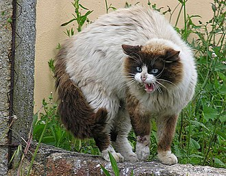
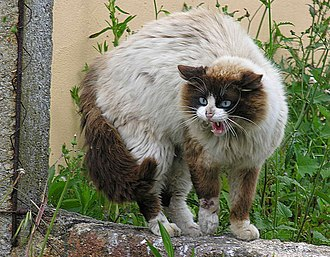

The cat (Felis catus) is a domestic species of small carnivorous mammal.It is the only domesticated species in the family Felidae and is commonly referred to as the domestic cat or house cat to distinguish it from the wild members of the family. A cat can either be a house cat, a farm cat, or a feral cat; the latter ranges freely and avoids human contact. Domestic cats are valued by humans for companionship and their ability to kill rodents. About 60 cat breeds are recognized by various cat registries
The domestic cat is a member of the Felidae, a family that had a common ancestor about 10–15 million years ago.[42] The genus Felis diverged from other Felidae around 6–7 million years ago.[43] Results of phylogenetic research confirm that the wild Felis species evolved through sympatric or parapatric speciation, whereas the domestic cat evolved through artificial selection.[44] The domesticated cat and its closest wild ancestor are diploid and both possess 38 chromosomes[45] and roughly 20,000 genes.[46] The leopard cat (Prionailurus bengalensis) was tamed independently in China around 5500 BC. This line of partially domesticated cats leaves no trace in the domestic cat populations of today.
 
